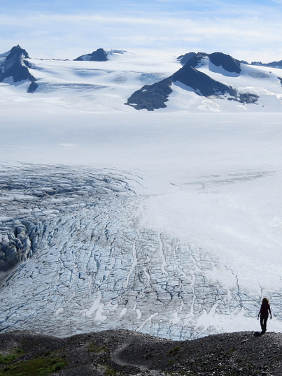
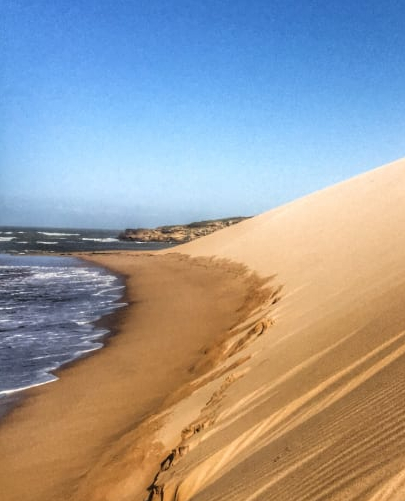
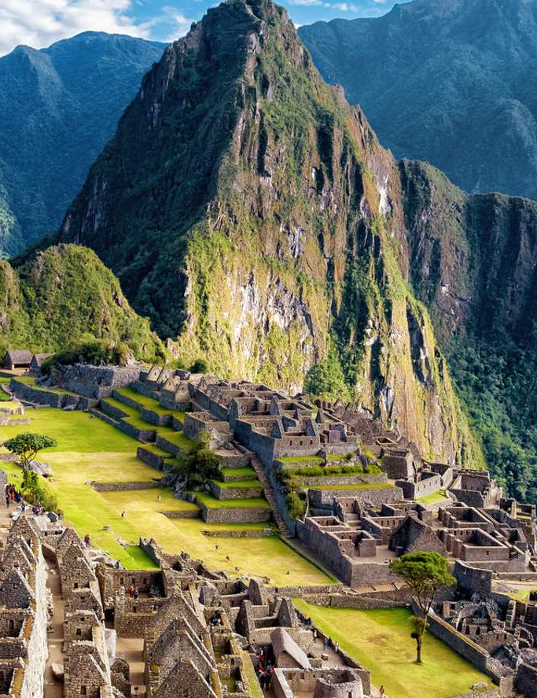

After 10 years working in the Finance field (Private Equity Associate & CFO for fast-growing compagnies) and 1 year of travelling around the globe,
I decided to learn code to be able to launch my own project.
|  |
Alaska (USA)Renowned as “The Last Frontier”, Alaska may have been admitted into the US as the 49th state, but it certainly jumps right to the very top in terms of amazing beauty. It is one of the most breathtaking and wild place I’ve ever visited. What to do? |
|  |
La Guajira (Colombia)La Guajira occupies most of the Guajira Peninsula in the northeast region of Colombia, on the Caribbean Sea and bordering Venezuela, at the 'northernmost' tip of South America. It offers amazing landscape, and this little feeling of "end of the world". What to do? |
|  |
Machu Picchu (Perù)Machu Picchu is a 15th-century Inca citadel, located in the Eastern Cordillera of southern Peru, on a mountain ridge 2,430 metres (7,970 ft) above sea level. It is located in the Cusco Region, above the Sacred Valley. Most archaeologists believe that Machu Picchu was constructed as an estate for the Inca emperor Pachacuti (1438–1472) What to do? |